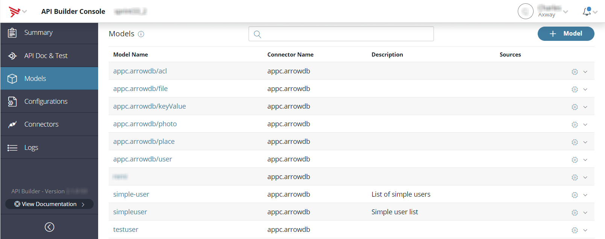
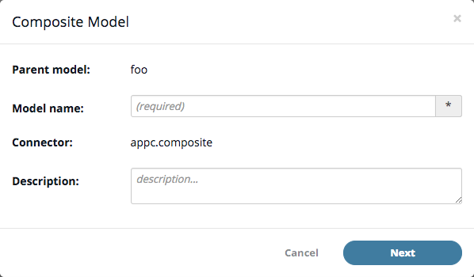

Models
Introduction
This guide covers the basics for creating Models. Models are a way of accessing data stored in either server memory or a backend service, such as Mobile Backend Services or a MySQL database, using a Connector. Models are accessed like standard REST objects using predefined endpoints that API Builder automatically generates. You can either create a model by defining your own schema, use an existing model defined by a connector, modify an existing model, or create a composite model by joining two or more models together.
To programmatically create Models, see the API Builder.Model API reference.
In the  Models tab, you will see a list of models (by name), connector names, descriptions, and any joins to other models. This page allows you to also create new models, edit an existing model, and compose the model into a new model.
Models tab, you will see a list of models (by name), connector names, descriptions, and any joins to other models. This page allows you to also create new models, edit an existing model, and compose the model into a new model.
Create a new model
Models can be created by many different ways but with the GUI, you don't necessarily need to get your hands dirty with writing out code.
To create a new model using the GUI:
-
Click the + Model button.
-
In the model window.

-
Enter the Model name (required).
-
Select a Connector (required).
-
Enter a description for the new model. While this is an optional field, we encourage you to provide a clear and concise description of what the model does.
-
Click Next to start the process of creating a new model.
-
-
In the New Model page, you will see the name of the model you just created with an option to edit that name and the Connector you selected for it to use.
-
To add a new field, click the + Field button. In the modal window,
-
Enter the Field name (required).
-
Select the Type for this new field.
-
Enter a Defaultvalue (optional).
-
Enter a Description.
-
Check off the Read-only and/or the Required boxes.
-
Click Add field to model to complete the addition of this new field.
-
-
Repeat step 4 as needed to add as many fields as necessary.
-
At this point, you can edit any field you created by clicking the pencil icon at the end of the field row.
-
If the field isn't needed, you can remove it by clicking on the trashcanicon at the end of the field row. Note: There is no warning for deleting a field. Once you delete the field, you will not be prompted for a confirmation of the action.
-
Click the Next > button.
-
Optional: on the endpoint generation page, select the methods that will be automatically generated for the API endpoints. When you click Next, you are brought to the API generation page where you can optionally generate an API definition for your new model, and choose the method(s) that you wish to generate. To generate API endpoints:
-
Select the methods that will be automatically generated for the API endpoints.
-
You can change the singular and plural values for this new model. These values are used in the API documentation (e.g. "Create a user", or "Count users"), but these values are also used in the body of the API responses.
-
If you are satisfied with you new field(s), click the Save button.
-
-
Also on this page, you can change the singular and plural values for this new model.
-
If you are satisfied with you new field(s), click the Save button.

Edit a model
To edit an existing model using the GUI:
-
Navigate to the Models tab.
-
Locate the model you wish to edit and click the
 cog icon at the end of the row.
cog icon at the end of the row. -
Click Edit to edit this model. A dialogue window will open up and allow you to make changes to your selected model.

-
You can edit the model name by clicking the
 pencil icon next to the model name.
pencil icon next to the model name. -
Locate the field you wish to edit and click the pencil icon at the end of it's row.
-
Modify the Field name, Type, Default value, and/or Description fields as necessary. You can also toggle the Read-only and Required check boxes.
-
Once you are done modifying this field, click the Update field button.
-
Repeat steps 6-7 as necessary.
-
Click the Next button.
-
Modify any of the API endpoints and/or the Singular and Plural fields.
-
Click the Save button if you are satisfied with your changes.
Composing a new model
To compose a new model using the GUI:
Click on the
Cog 
icon at the end of the row for the model you wish to compose and select Compose into new.
-
Enter in the (required) and a description.
-
In the Composite Model page, you can edit the name of the composite and modify the fields (as needed). If you want to rename the composite, click the pencil icon and fill in the fields of the Composite Model modal window as necessary. Click Update when you have finished.
 -
If you wish to modify the fields of this new composite, click the Pencil
icon at the end of the row for the field in question. -
Fill in the various fields and check the Read-only or Required check boxes as necessary. Click Update Field once you have finished.
-
When you are done making any modifications, click the Next button.
-
Enable or disable any auto-generated API endpoints as you see fit.
-
Modify the Singular and Plural fields as necessary.
-
Click Save to commit your new composite model.